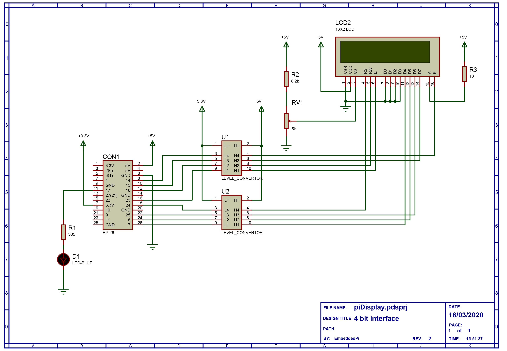

A HD44780 LCD controller based notification for minecraft servers (Java).
piDisplay is a 16x2 character LCD based minecraft server notification system. You will need a Minecraft server running this plugin and build the hardware decsribed in this guide.
Current prototype
If you are not interested in playing with the code then just download the latest .jar file from the releases link.
After downloading, copy it to your minecraft server plugins folder. Guidance on registering Twitter applications here.
Below here is placeholder from another plugin to be ignored.
Once complete you will need to note your Consumer Key (API Key),
Consumer Secret (API Secret), Access Token and Access Token Secret. These should appear as long strings and you need to enter them into the plugin settings in order for the automation to work.
Upon first run the plugin will write a config.yml to its subdirectory in your plugins folder. The default content for this file is as below
TWITTER_CONFIGURED: false
API_KEY: XXXX
API_SECRET: YYYY
token: ZZZ
secret: ABABAB
updateMineTwitConfig
If you want to play with the source code then download the whole project from the links on the left. It was built in Eclipse using the Maven framework.
The plugin has 3 commands that can control events are tweeted.
It should be noted that restarting the server after manually editing config.yml will have broadly the same effect except that in the case of an error it will revert to the defaults not the last known good value. For this reason it is recommended to either use the console commands to change parameters or use updateMineTwitConfig if manually editing.
Schematic.
This is me getting back into enjoying fiddling with electronics after 20 years of doing it for the day job and falling out of love with it. Now that the bills don't depend on it (note I've just changed career, I haven't "made it" or won the lottery"), I'm doing it for fun again. Any suggestions for improvements to the code are welcome, contact me on GitHub. It's been fun perhaps with the exception of my woeful attempts to understand Git merges!